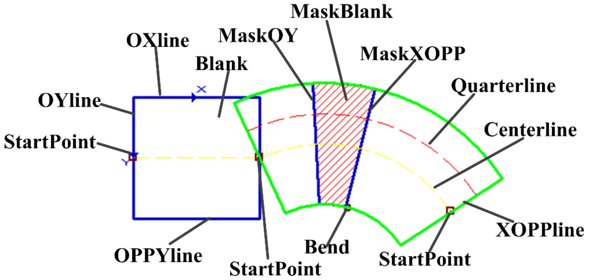
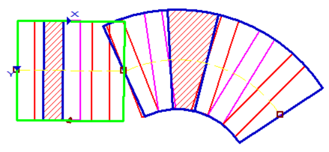

表示可变折线卡尺，对应的Gui图形控件为scGuiTrendlineEx，例如曲线边宽检测工具的检测区域、找腰形工具的查找区域。如下图所示，该可变折线中有两个可变矩形，即有两个分段。


| 分类 | 接口名称 | 接口描述 |
|---|---|---|
| 构造 | scTrendlineExCaliper | scTrendlineExCaliper()默认构造函数。 |
| 函数 | GetSubRectNum | 获取可变折线中可变矩形数目（折线分段数目）。 |
| GetSubRectEx | 获取指定序号的可变矩形。 | |
| SetSubRectEx | 设置指定序号的可变矩形。 | |
| GetAllRectExCaliperNum | 获取所有分段的卡尺数目和，即所有分段的卡尺数目总和。 | |
| GetSingleRectExCaliperNum | 获取指定分段的卡尺数目。 | |
| GetCalipers | 获取所有的卡尺。 | |
| GetIndexCaliper | 获取第rectExID分段的第caliperID卡尺。 | |
| BoundingBox | 获取可变折线卡尺的最小外接矩形。 |
功能：构造scTrendlineExCaliper对象。
参数：无。
返回值：无。
功能：获取可变折线中可变矩形个数。
参数：无。
返回值：可变折线中可变矩形个数，整型。
功能：获取可变折线中指定序号的可变矩形区域。
参数：
返回值：第rectExID个可变矩形，scRectEx类型。
功能：设置第rectExID分段的可变矩形。
参数：
rectExID：可变矩形序号，整型。
rectEx: 可变矩形，scRectEx类型。
返回值：第rectExID个可变矩形的卡尺数目，整型。
功能：获取所有分段的卡尺数目总和。
参数：无。
返回值：所有分段的卡尺数目总和，整型。
功能：获取第rectExID分段的卡尺数目。
参数：
返回值：第rectExID个可变矩形的卡尺数目，整型。
功能：获取所有的卡尺。
参数：无。
返回值：所有卡尺组成的向量，scRectEx类型的向量，相当于Python中的list。
功能：获取第rectExID分段中的第caliperID个卡尺。
参数：
rectExID：可变矩形序号，整型。
caliperID：卡尺序号，整型。
返回值：第rectExID分段中的第caliperID个卡尺，scRectEx类型。
功能：获取可变折线的最小外接矩形。
参数：无。
返回值：最小外接矩形，scRect类型。
无
无